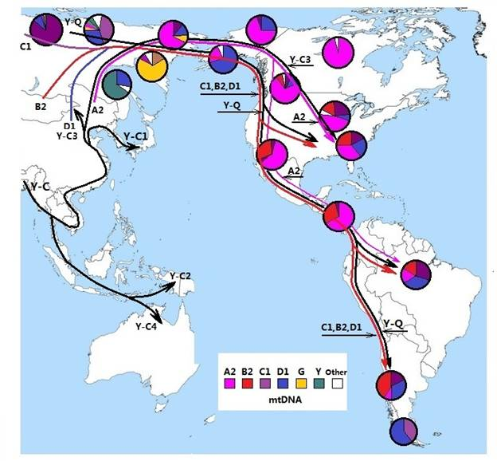

|
Page 4 of Part 5: Stepping into the Americas
.
I. The Y chromosome genetic markers of the American aborigines
Where did the American aborigines come from? Before molecular anthropology becomes a scientific discipline, scientists can only conduct their research based on geographical proximity, resemblance in skeletal structure and the tools used at the different times. Once molecular anthropology is well established as a scientific discipline, it is the most reliable method to unveil the secrets surrounding the migratory routes of different ethnic groups as well as their ancestral lineage by analysis of the DNA decoding from these ethnic groups. This also applies to the American aborigines.
In the last century, Stanford University had a team of 21 conducting research on the relationship between ethnic groups and their Y chromosome (Please see Part 2” Looking for the Y-Chromosome Adam”). From the American aborigines, they collected Y chromosome samples from 106 males. The result showed that the Y chromosome DNA is closed related to those living in Asia. At the present time, there are many other research reports which confirm this conclusion.
The Y chromosome of the American aborigines is relatively simple consisting of two types, one with the M217 genetic marker C3 haplogroup and the other with the M242 genetic marker Q haplogroup.
.

Figure 5-24: The migratory routes of the haplogroups of Y chromosome and mitochondrial
1. Who had accompanied C3 when he came to America?
Just as M168 was accompanied by L3, every paternal haplogroup must be accompanied by a maternal haplogroup. At times, one paternal haplogroup was accompanied by more than one mitochondrial DNA haplogroups. One example is the Australian aborigines mentioned in the previous Page.
Y chromosome haplogroup C3 is the children or grandchildren of genetic marker carrier M130 (children and grandchildren below all belong to haplogroup C). We have discussed earlier that M168 left Africa for Asia with the maternal genetic carrier L3.While migrating eastward reaching the southwest region of Asia, paternal M168 gave birth to genetic marker carrier M130. Below the maternal genetic marker carrier L3, the new maternal genetic marker carriers, N and M were born. Among the daughters of N and M, a small number of them accompanied M130 continued to migrate eastward along the coastline. Most of the N and M daughters accompanied the M168 males who decided to settle down. Later, the daughters of N and M accompanied the new genetic marker carrier M89 northward towards the Eurasian continent (Please see Figure 5-13).
When those people who went eastward reached the southern part of Asia, they separated into two branches. One branch continued their journey eastward towards Oceania. Subsequently, this branch formed two new branches, C2 and C4. C2 reached New Guinea and C4 reached Australia.
The other branch followed the coastline northward and formed two new branches, C1 and C3 in China. C1 reached Japan via Korea. Part of C3 reached Mongolia and the others reached Siberia and eventually North America.
Which one of the daughters from the maternal lineage accompanied C3 to North America? The four major mitochondrial DNA haplogroups found in North American aborigines are A2, B2, C1 and D1. Obviously, it should be one (or more) of these haplogroup.
In China, there are people who carry the Y chromosome haplogroup C3 as well as the mitochondrial DNA haplogroup A. In the published report by the Chinese molecular anthropologists Zhiyoung Chen and Rubo Mo (Referece 3), they believed that A2 was the haplogroup who accompanied C3 to North America. Among the four haplogroups found in the North American aborigines, A2 was the most advanced in age. It is possible that she was born 24,800 years ago (Reference 10).
Y chromosome haplogroup C3’s age was much older than haplogroup Q. In addition, the distribution of C3 and A2 in North America is very similar. From this we can see that the opinion expressed by these Chinese scholars is based on hard evidence.
Collective results from these DNA decoding, it is clear that the female who accompanied C3 to North America belongs to mitochondrial DNA haplogroup A2. Moreover, it is very likely that mitochondrial DNA A2 was the only haplogroup who accompanied C3.
2.Y chromosome haplogroup Q’s migratory route
From the location on the paternal lineage tree and its birth date, haplogroup Q should be born later than C3. On the paternal lineage tree, Q is a descendant of Y chromosome M89 genetic marker carrier (Please see Figure 2-5 The Paternal genetic tree in Part 2). M89 might have been born 50,000 years ago in the southern part of Asia (Please see figure 5-13).
The descendants of M89 migrated northward and gave birth to M9 during this journey. M9’s descendants migrated northwest reaching central Asia and gave birth to a new genetic marker M45. M45 migrated northward reaching the western part of Asia close to Europe and gave birth to M173 and M242 two new genetic markers carriers. M173 migrated westward and became the ancestor of Europeans. M242 migrated eastward and became the ancestor of west Asian. Moreover, they migrated eastward crossing the Bering Strait and entered North America. It took approximately 40,000 years and travelled about 40,000 Kilometer to complete this huge journey. Therefore, this migration was quite slow. On average, a single generation just travelled 30 Kilometer. During this migration they left behind their descendants.
The descendants of male with the genetic marker M242 is classified as haplogroup Q. There were three branches of haplogroup Q, namely, Q1a4, Q1a3a, and Q1a3*, who entered North America. The female haplogroup who accompanied them to North America should be B2, C1 and D1. Maternal lineage haplogroup A2 accompanied Y chromosome C3 into North America. Did they also accompany haplogroup Q to North America? Even though this is a possibility, but it is more likely that after reaching North America migrating south along the coast, those females who used to live with the paternal lineage (Y chromosome) haplogroup C3 now accompanied Y chromosome haplogroup Q male migrated southward. This is why we can find maternal lineage mitochondrial DNA haplogroup A2 in South America.
From the analysis above, we can see that the paternal lineage (Y chromosome) haplogroup Q entered North America with just two or three small groups around 15,000 years ago. At least a few reached South America along the coast by boat or raft. Among the Siberia aborigines, there are three Y chromosome haplogroups and two mitochondrial DNA haplogroups not found in America. If there were more batches of immigrants to America, then the haplogroups found in North America would be much more complicated. This is what we discussed as the migratory “bottleneck effect” which we have already discussed in Page 1.
3. Is it possible that the South American aborigines originally came from the other side of the Pacific Ocean 30,000 years ago?
There are people who believe that the South American aborigines might have originated from the other side of the ocean. Their hypothesis is built on the fact that there are a skeletal fossils from South America which are very similar to those found in Australia. Another reason is that some people believe that the South America’s aborigines had a much longer history than the North America’s aborigines. All these conclusions are built on the traditional archeological methodology, namely, skeletal comparison, dating analyses of excavated tools and the layers of earth. Nonetheless, to confirm the place of origin of these aborigines requires the support of DNA decoding.
The Y chromosome of South America’s aborigines is basically the haplogroup Q. There this no haplogroup Q genetic marker M242 in the aborigines of Oceania. Haplogroup Q was born 22,000 years ago in the central Asia region. There is no report which shows that they reached Oceania. From these two points, one can refute the possibility that the aborigines with haplogroup Q crossed the ocean 30,000 years ago.
From the viewpoint of mitochondrial DNA haplogroup, mitochondrial DNA haplogroup A2 ethnic groups cannot be found in Oceania. The other mitochondrial DNA haplogroups found in South American are B2, C1, and D1. The age of these haplogroups is less than 30,000 years. Therefore we can see that we cannot find supporting evidence from mitochondrial DNA decoding. If we say that the skeletal fossils found in South America resemble those in Australia, may be this could be accounted for by the proximity of the hereditary lineage between the South America aborigines’ Y chromosome C3 and Australian aborigines’ C4.
Apparently, the Brazilian female archaeologist, Dr. Niede Guidon’s opinion that the Pedra Furada Sites being 40,000 years old should be seriously questioned.
4. Can we determine from DNA decoding as to when the aborigines find arrived in North America?
Based on the fact that on the paternal lineage tree haplogroup C3 is older than haplogroup Q and mitochondrial haplogroup A2 is older than haplogroups B2, C1 and D1, therefore the union between the paternal C3 and the maternal A2 may have been the first who arrived in North America.
The distribution of the North America aborigines from this union matches perfectly with the geographical location of the McKenzie Corridor. If this corridor was closed between 15,000 to 22,000 years ago (closed for 7,000 years), then, their arrival must have been either before or after this period i.e. before 22,000 years ago or after 15,000 years ago. Of course this does not preclude the fact that they arrived in North America by crossing the ocean during the period when the corridor was closed. From DNA decoding, one can only give such an answer.
As we have already explained in Page 1 of the Part 4, DNA decoding is very accurate method to unravel the mystery surrounding mankind’s lineage. However, when it comes to pinpointing the exact time period, DNA decoding method leaves much room for error. Oftentimes, one must rely on physical dating methods for answer to a question like this one.
5. The importance and significance of DNA decoding in unraveling the origin of Modernhumans and his migratory history
For the last few hundred years, traditional archeological method determined Modernhumans’s physiological state and living conditions at the time from comparison of excavated fossils and stone tools. It is difficult to connect all the relatives of the ethnic groups around the world. Moreover, it is impossible to connect modern human beings with the ancient peoples who once lived around the globe. Because of this, many erroneous conclusions have been drawn.
The birth of molecular anthropology with the research focus on the origin of modernhumans and his migratory history by utilizing the DNA decoding method has succeeded in obtaining very exciting results. The analysis of ethnic groups’ Y chromosome and mitochondrial DNA decoding around the world led to two conclusions: 1. All ethnic groups around the world came for one pair of parents and 2. Clarification of the relatives of all ethnic groups around the world and their geographical distribution. From modernhumans’s hereditary and relationship tree and their geographical distribution, one can depict a 3-dimentional picture of the origin and development of modernhumans. Moreover, it shows a completely new understanding of modernhumans’s knowledge of himself.
This is the outcome concerning the analysis of the origin of North America aborigines.
Conclusion of this Page: (taken from the BBC TV series " The Incredible Human Journey" "parts of the Americas," the conclusion is telefilm Conclusion)
“With a foothold in this New World, the first Americans flourished here, until eventually, some 15,000 years later, they were to come face to face with some distant members of their family tree. In 1492, a small group of European explorers arrived on the shores of the Americas, where they were met by bewildered locals. Even though both groups were branches of that original exodus from Africa some 70,000 years ago,
the Europeans didn't see the inhabitants of America as long-lost cousins, but rather as wild, savage, even unhuman. And the Native Americans saw those strange visitors as deities possessed of supernatural powers. They just didn't recognize each other.
Over the next 400 years or so, this physical and cultural divide would help fuel the slaughter of the native people. Even conservative estimates run into hundreds of thousands dead. A tragedy which seems so much more senseless in light of what we now know about our human story. Our origins in Africa, the journeys our ancestors made
and the close genetic bond we all share. The differences between us all are really just superficial. We're all members of a young species that goes back less than 200,000 years, and we're all surprisingly closely related.
This is the story that has emerged from the study of stones, bones and our genes. That wherever we've ended up all over the world, we are Africans under the skin. And uncovering that story, retracing the steps of our ancestors, has given me a profound sense of our common humanity, our shared past and our shared future.”
After seeing this general explanation, let us compare it with the viewpoint expressed by Darwin in his book: different peoples all are the result of evolution from different types of apes and at different stages of evolution. They were all unrelated (Darwin’s book, “The Descent of Man, and Selection in Relation to Sex”). There is such a big difference in these two viewpoints. We must change our old concept which we got from the erroneous theory of evolution and accept the new science, the new findings and new concept. A true understanding that every one on earth are the descendants from one pair of parents should enables us to treat one another as ones own brothers and sisters.
Reference:
1.See “Y-DNA SNP Index – 2011”£¬The International Society of Genetic Genealogy (The International Society of Genetic Genealogy ISOGG) ,
http://www.isogg.org/tree/ISOGG_YDNA_SNP_Index11.html
2. Y haplogroup C3 and Q distribution in the Americas, based on the results of 14 studies reported consolidated drawn into. In these studies, a total of 66 ethnic groups collected thousands of DNA samples, of which 2,968 samples from the Americas.
3.Chen Zhiyong,Migration and Diversification of Mitochondrial Haplogroup N in East Asians,Communication on Contemporary Anthropology Vol.
4.Erika Tamm1, et. al., Beringian Standstill and Spread of Native American Founders,PLoS ONE Issue 9, September 2007.
5. Pedro Soares,Correcting for Purifying Selection:
An Improved Human Mitochondrial Molecular Clock,The American Journal of Human Genetics 84, 740–759, June 12, 2009
6.Brian M. Kemp, et. al.,Genetic Analysis of Early Holocene Skeletal Remains From Alaska and its Implications for the Settlement of the Americas, American journal of physical anthropology 132:605–621 (2007).
7.M.Thomas P.Gilbert, et. al.,DNA from Pre-Clovis Human Coprolites in Oregon, North America,Sciencexpress,3 April 2008 / Page 1.
8.Hendrik Poinar et. al.,Comment on “DNA from Pre-Clovis Human Coprolites in Oregon, North America”,Science July 10 2009.
9. R E Taylor, The Contribution of radiocarbon dating to new word archaeology , Radiocabron, Vol 42, Nr 1, 2000, p 1–21 and
“New date for Old Crow caribou flesher”, Center for the Study of Early Man, University of Maine at Orono, Volume 2, Number 2, 1985. “Four specimens were undoubted artifact, including a caribou-tibia flesher, two caribou antler wedges, and a caribou antler billet. Previously dated to 27,000 yr B.P., the caribou flesher yielded a new date of only 1350+-150yr B.P. The other three artifacts yielded similar late prehistoric dates. ”
10. Saillard J, et. al., mtDNA variation among Greenland Eskimos: the edge of the Beringian expansion. Am J Hum Genet 67:718-726£¬Sep. 2000.
Previous Page 1 2 3 4 Back to Homepage
|